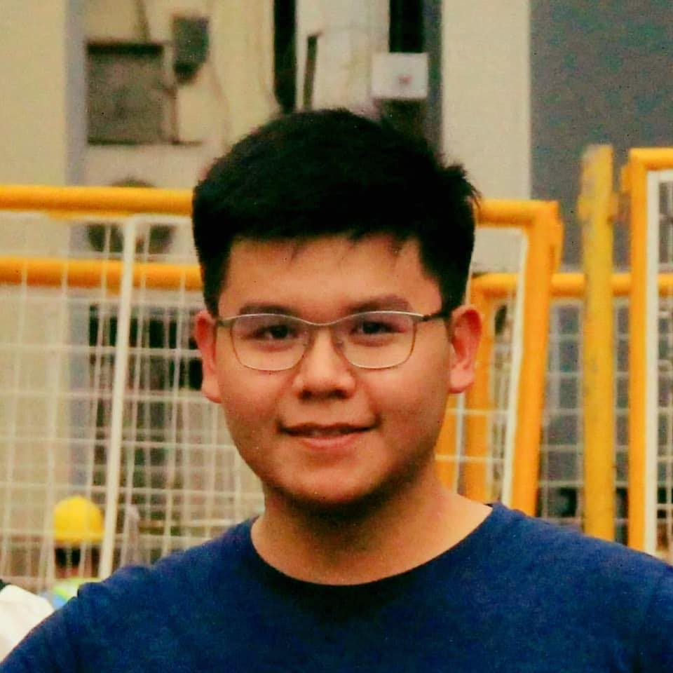

Jonathan Barlin

Summary:
A BSIT - Specializing in IT Automation graduate from batch 2023.
Education:
University of Santo Tomas - Sampaloc, Manila (2019-2023)
- Bachelor of Science: Information Technology - Specialization in Automation
- Dean's ListerCoursework: Programming, IoT, Networking
My Experience:
Capstone Project - Severina LPG Inventory System - QA Analyst (2022)
Capstone I & II
- An Inventory management system application to monitor LPG stocks of our client.
- Tasked to write and manage test cases along with QA team
- Performed manual testing of the application across different environments, identifying critical
bugs and ensuring timely fixes.
- Contributed to project management by using
Gantt charts to schedule testing tasks, track
progress, and ensure alignment with project timelines.
ADYA-LOCK System Dev & Programmer (2022-2023)
Final Year Capstone
- A motorcycle ignition switch cover with a
breathalyzer that detects intoxication of the
driver and prevents the driver from starting the
motorcycle
- Utilized arduino to use alcohol, biometric, and
barometrics sensors.
- Customized enclosures to keep components safe.
- Mounted the project on a motorcycle.
- Performed manual testing and documenting the
results of the project
I am going to try to push this change from my other device.